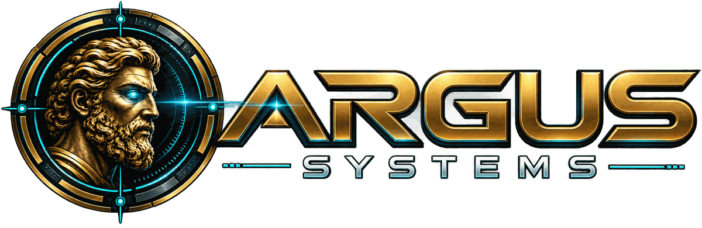
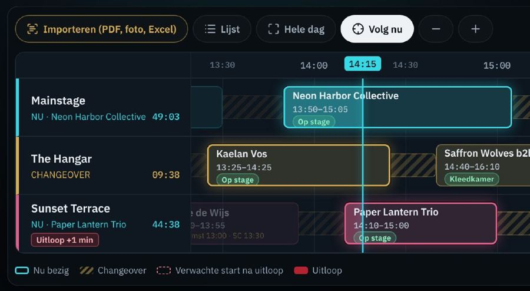
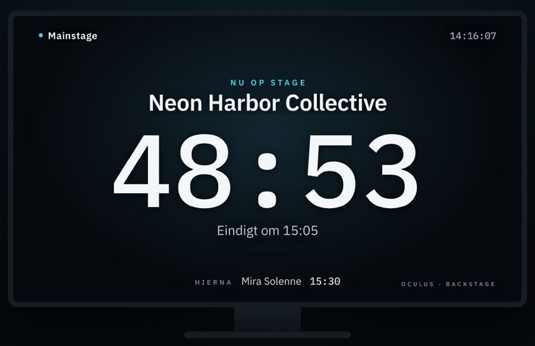
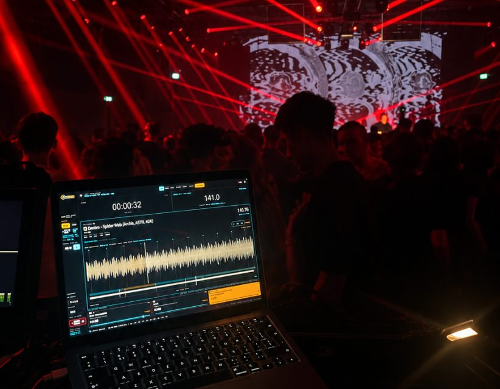

Honderd ogen.
Eén show.
Argus Panoptes, de wachter met honderd ogen, sliep nooit met alle ogen tegelijk. Er keek er altijd wel één. Dat is precies wat een productie nodig heeft.
Op de vloer zien we elke week waar het schuurt.
Timetables die niet meer kloppen. Planningen verspreid over losse lijstjes. Informatie die net te laat aankomt. Tappen op een knop terwijl je eigenlijk de show wilt vormgeven.
ARGUS Systems bouwt de software die we zelf misten. Niet achter een bureau, maar tussen de cases, op echte producties, door de mensen die er elke dag mee werken. Elke tool wordt eerst in het veld getest voordat hij verder gaat.
Van idee
naar het veld.
Concept
Een probleem dat we op de vloer zelf tegenkwamen.
Bouw
Eerste versies, gebouwd rond hoe een productie echt loopt.
Test
Intern en met operators uittesten en bijschaven.
Alpha in het veld
Draaien op echte evenementen, onder echte druk.
Release
Beschikbaar voor andere producties en operators.
Eén klok voor de hele productie.
Regie, backstage, kleedkamers en FOH zien live dezelfde tijd. Op elk scherm, zonder internet. CHRONOS houdt alle stages bij, laat uitloop direct zien en zorgt dat iedereen weet wie er nu staat en hoe lang nog.
- Alle stages naast elkaar: live, changeover, wie er hierna komt en de marge tot curfew
- Uitloop en nieuwe starttijden direct in de tijdlijn; timetable importeren vanuit PDF, foto of Excel
- Schermen voor backstage, kleedkamers en crewruimte, met berichten van regie
- Artiesten en crew volgen hun eigen tijden via één link op hun telefoon
- Volledig offline, zonder accounts of cloud, op je eigen productienetwerk


Planning, magazijn en show in één systeem.
AXIS is een plannings- en magazijnplatform voor de evenementenbranche, opgebouwd uit modules. Naast planning en materiaalbeheer brengt AXIS ook de productie zelf onder: van de aansturing van schermen tot accreditatie. Zo groeit het mee met wat je nodig hebt.
- Planning & magazijn: projecten, crew en materiaal op één plek
- LIVE: schermen en zones aansturen tijdens het evenement
- Accreditatie: professionele accreditatie, ook haalbaar voor kleinere evenementen
Main stage
Backstage
Crew catering
Entree
Zicht op de muziek. Grip op het moment.
METRON is een muzikale informatie- en timingomgeving voor lichtoperators. Het combineert Pro DJ Link en BPM-detectie uit audio, en geeft het tempo rechtstreeks door aan de speedmasters op je lichtmixer. De operator bepaalt wanneer METRON het overneemt. Zo verschuift de aandacht van tappen naar het vormgeven van de show.
- Tempo uit Pro DJ Link of audio, direct naar je speedmasters
- Inzicht in decks en tracks
- Eigen showmarkeringen met aftelling naar belangrijke momenten
- Muzikale tijdsberekeningen voor fades en delays

Weet wat er op je route ligt, voordat je vertrekt.
HOROS is een navigatie-app voor iedereen die met bus of truck van productie naar productie rijdt. Op basis van actuele RDW-gegevens waarschuwt HOROS voor milieuzones en, als je de afmetingen van je voertuig invult, voor bruggen en viaducten waar je niet onderdoor past.
- Live navigatie: meldingen onderweg, terwijl je rijdt
- Routecheck: de hele route vooraf laten nalopen op knelpunten
- Locatiecheck: snel zien of een adres bereikbaar is met jouw voertuig
- Milieuzone op de route · check de emissieklasse van je voertuig
Zet ARGUS in op
jouw productie.
Wil je een van onze tools testen op jouw evenement, of heb je een idee dat hier past? Operators en producties die mee willen bouwen, horen we graag.
Neem contact op